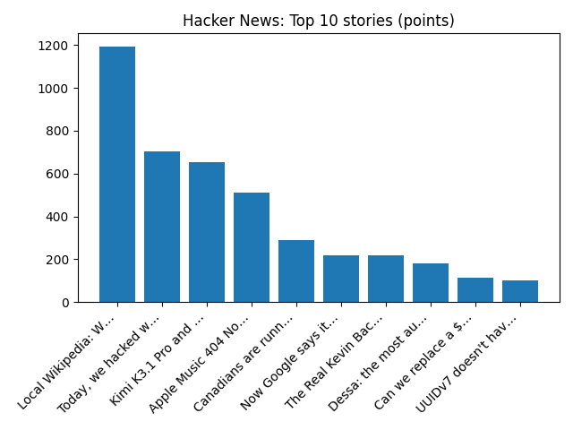

Judge puts off decision on Charlie Kirk murder trial date, media reports - Reuters
Reuters — Headlines (Google News)
YOUR DAILY INTELLIGENCE BRIEF · 2026-10-23
Global watch: Judge puts off decision on Charlie Kirk murder trial date, media reports - Reuters, White House lifts tariffs on some Canadian goods as midterm elections loom.
Northern Virginia: Amazon backs off Northern VA data center plan months after purchase - The Real Deal, Burke Centre Parkway westbound permanent access changes at Fairfax County Parkway begin Oct. 26 - Virginia Department of Transportation (.gov).

Global coverage includes Judge puts off decision on Charlie Kirk murder trial date, media reports - Reuters; White House lifts tariffs on some Canadian goods as midterm elections loom; Carney dismisses US accusations of Canadian election interference - Reuters. Local coverage includes Amazon backs off Northern VA data center plan months after purchase - The Real Deal; Burke Centre Parkway westbound permanent access changes at Fairfax County Parkway begin Oct. 26 - Virginia Department of Transportation (.gov).

List of New Zealand Liberal Party MPs
The following is a list of members of the New Zealand Liberal Party who served in the New Zealand House of Representatives. From 1922 onwards the Liberal party received several cosmetic name changes; Progressive Liberal Labour Party (1922), "National" Party (1925) and finally United Party (1928).
https://en.wikipedia.org/wiki/List_of_New_Zealand_Liberal_Party_MPs
Runs so far today: 3